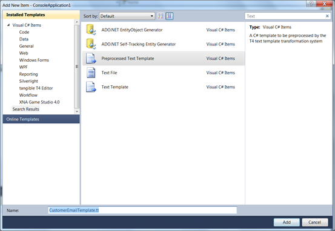
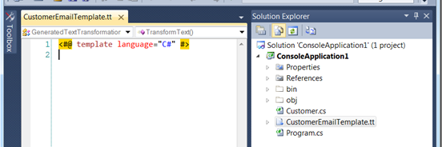

调用T4运行时文本模板
在C# Console程序中调用T4的运行时文本模板生成代码
- 在项目中新增一个预处理过的文本模板(Preprocessed Text Template,VS2017等改名为运行时文本模板,Runtime
Text Template)，命名为CustomerEmailTemplate.tt.

运行时文本模板的自定义工具属性为TextTemplatingFilePreprocessor。与传统T4模板不同，每个运行时文本模板都自动生成同名的cs文件，定义同名的类对象。调用其TransformText()方法就能获得转换结果。

下图为使用了第三方T4插件(Tangible T4)后的IDE编辑框：

参见
DSL 2010 Feature Dives- T4 Preprocessing - Part One - Rationale by Gareth Jones
DSL 2010 Feature Dives- T4 Preprocessing - Part Two - Basic Design by Gareth Jones
VS10 Beta 1 / T4 Preprocessing part 1 by Pablo Galiano
VS10 Beta 1 / T4 Preprocessing part 2 by Pablo Galiano
Why is a Preprocessed Template the Coolest Thing since Sliced Bread by Kathleen Dollard